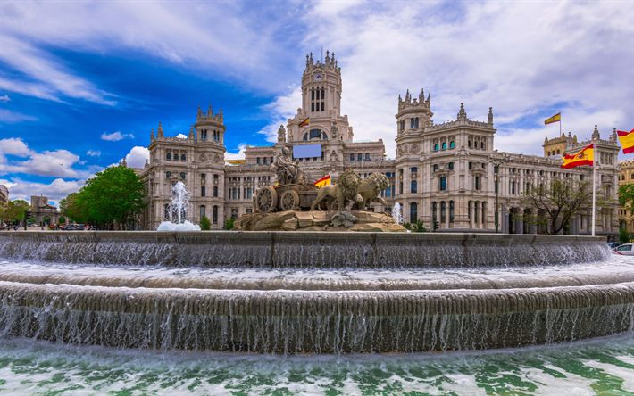
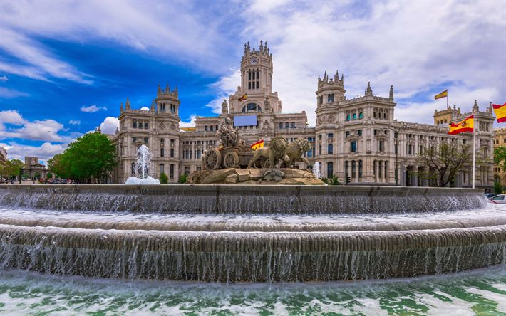

ğ“œğ“ªğ“ğ“»ğ“²ğ“ : 𝓢𝓾𝓬𝓬𝓸𝓶𝓫𝓮𝔃 𝓪𝓾𝔁 𝓬𝓱𝓪𝓻𝓶𝓮𝓼 ğ“ğ“® 𝓵𝓪 𝓬𝓪𝓹𝓲𝓽𝓪𝓵𝓮 𝓮𝓼𝓹𝓪𝓰𝓷𝓸𝓵𝓮
Madrid est une capitale mondiale du football, abritant deux des clubs les plus prestigieux et titrés de l'histoire : le Real Madrid et l'Atlético Madrid. Cette ville est le berceau de rivalités légendaires et de moments historiques dans le monde du football. Les passionnés du sport se rassemblent dans les rues animées pour célébrer leurs équipes, que ce soit au stade Santiago Bernabéu ou au stade Wanda Metropolitano. Madrid vibre au rythme des matchs, imprégnée d'une culture footballistique profonde et d'un amour inconditionnel pour le jeu. Les exploits des joueurs emblématiques, les triomphes glorieux et les déceptions amères font partie intégrante de l'identité de cette ville, faisant de Madrid un pilier incontesté du monde du football.
 

𝒞𝒪𝒩𝐹𝒪𝑅𝒯
Bienvenue dans l'élégance intemporelle du magnifique hôtel de luxe situé au cœur de Madrid. Avec une fusion harmonieuse de design contemporain et de charme classique, notre établissement incarne le raffinement et le confort absolu. Dès que vous franchirez nos portes, vous serez accueilli par un service impeccable et une atmosphère chaleureuse. Nos chambres et suites somptueuses offrent un refuge de luxe, avec des équipements modernes, des touches artistiques et une vue imprenable sur la ville animée de Madrid. Chaque détail a été soigneusement pensé pour créer un espace de détente et de tranquillité, où vous pourrez vous ressourcer après une journée bien remplie à explorer les merveilles de la capitale espagnole.
𝒜𝒞𝒯𝐼𝒱𝐼𝒯𝐸𝒮
Au stade Santiago Bernabéu, outre assister à des matchs de football légendaires du Real Madrid, les visiteurs peuvent également vivre une expérience immersive en explorant les coulisses de ce monument emblématique du football mondial. Des visites guidées permettent aux fans de découvrir les vestiaires, les zones réservées aux joueurs et aux entraîneurs, ainsi que de parcourir le tunnel menant au terrain où ils peuvent ressentir l'excitation palpable des jours de match. Les passionnés peuvent également visiter le musée du Real Madrid, qui abrite une vaste collection de trophées, de maillots historiques et d'objets relatant l'histoire glorieuse du club. Pour les amateurs de shopping, le stade propose une boutique officielle où ils peuvent acheter des souvenirs et des articles exclusifs du Real Madrid. En somme, le stade Santiago Bernabéu offre une expérience inoubliable pour les fans de football, alliant histoire, émotion et passion pour ce sport légendaire.